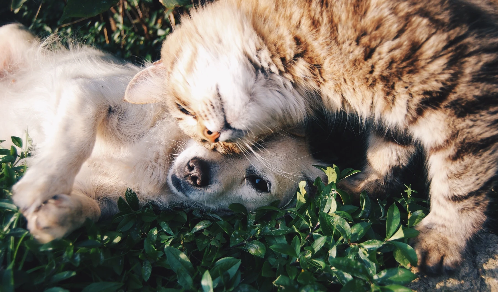

O aconchego de casa,
a tranquilidade da natureza.
O menor membro da sua família está em boas mãos. Recebemos nossos amigos cães e gatos com carinho em nossa casa em Koşuyolu.

Para seus amigos,
tudo está na Loft.
Da hospedagem aos cuidados, das brincadeiras às novas amizades… Estamos aqui para atender às necessidades do seu pequeno amigo.
Hotel para animais
Hospedagem com o conforto de casa e espaços de socialização para seu pequeno amigo.
Cuidados e estética
Banho, corte à tesoura e cortes personalizados. Cuidados com carinho, paciência e sem anestesia.
Loja para animais
Alimentos, brinquedos e acessórios: tudo o que seu pequeno amigo precisa em um só lugar.
Apoio veterinário
Exames de saúde de rotina e cuidados para nossos amigos hospedados conosco.
Treinamento
Saiba mais sobre nosso serviço de treinamento, que facilita a vida em conjunto.
Adoção gratuita
Apoio para unir nossos amigos que esperam um lar às suas novas famílias.
 NOSSA CASA EM KOŞUYOLU
NOSSA CASA EM KOŞUYOLUCompartilhamos a vida
juntos.
Em 2016, arregaçamos as mangas com carinho para garantir que nossos pequenos amigos passassem felizes cada minuto longe de casa.
Em nossa encantadora casa em Koşuyolu, criamos um segundo lar para nossos amigos mais próximos.
Conheça-nos melhorPatinhas felizes, boas lembranças.
Fique
tranquilo.
Respondemos às suas dúvidas antes da hospedagem do seu pequeno amigo.
Todas as perguntasOnde ficam hospedados nossos amigos cães e gatos?
Em uma casa independente em Koşuyolu, fazemos de tudo para que tenham uma hospedagem confortável. Recebemos nossos amigos gatos no andar superior e nossos amigos cães no andar inferior. Damos importância à existência de espaços próprios para ambos.
Também não limitamos o espírito livre dos nossos amigos felinos. Oferecemos espaço para sua natureza, que gosta de agir à própria maneira. Conforme a preferência do tutor ou do próprio gato, ele pode aproveitar seu espaço individual ou as áreas comuns.
Os pequenos que utilizam o serviço de estética recebem anestesia?
Mesmo quando os pequenos são ariscos ou tímidos, concluímos o corte de pelo com paciência e nunca usamos anestesia.
Em quais horários vocês atendem?
Atendemos todos os dias da semana, das 09:00–18:30. O horário de funcionamento pode variar nos feriados oficiais.
Entre em contato pelo número 0532 529 01 76 para saber os horários de entrada e saída da hospedagem, as condições de recolha e os preços.
Férias para seu pequeno amigo.
Adoramos nossos pequenos amigos. Mal podemos esperar para conhecê-los.
Vamos conversar sobre os hábitos do seu companheiro.
As avaliações em nosso site refletem as experiências pessoais de nossos clientes reais e incluem opiniões diferentes. Antes de reservar, converse conosco sobre as necessidades do seu companheiro, as informações que deseja receber e suas preferências de cuidados.